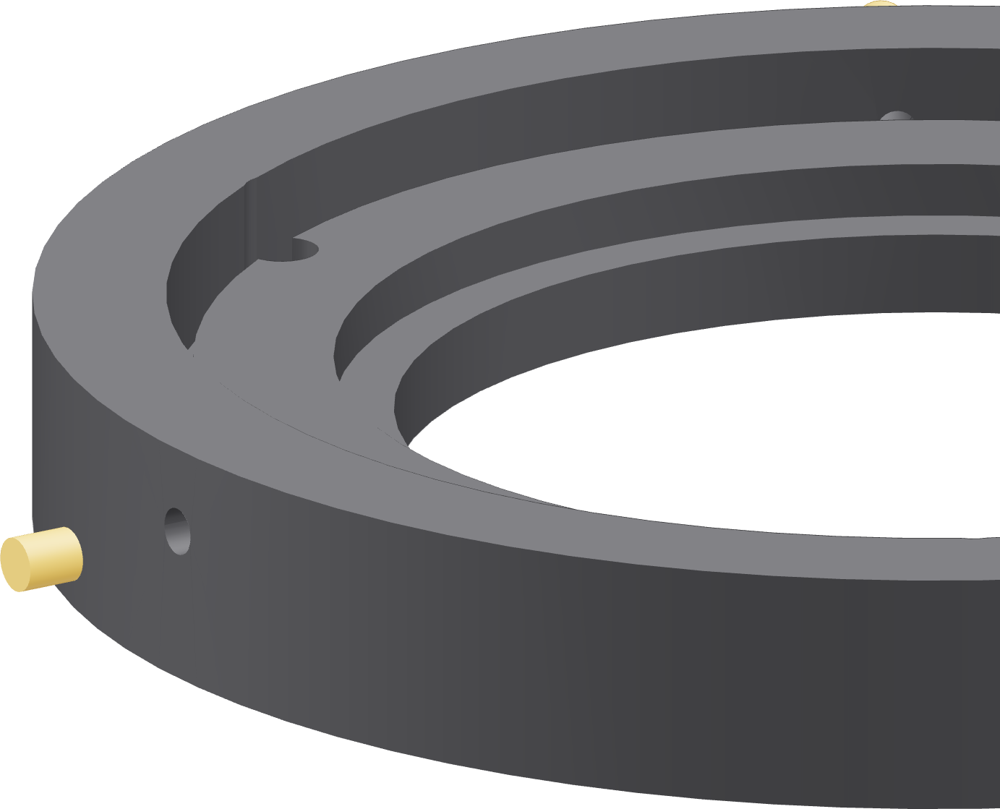
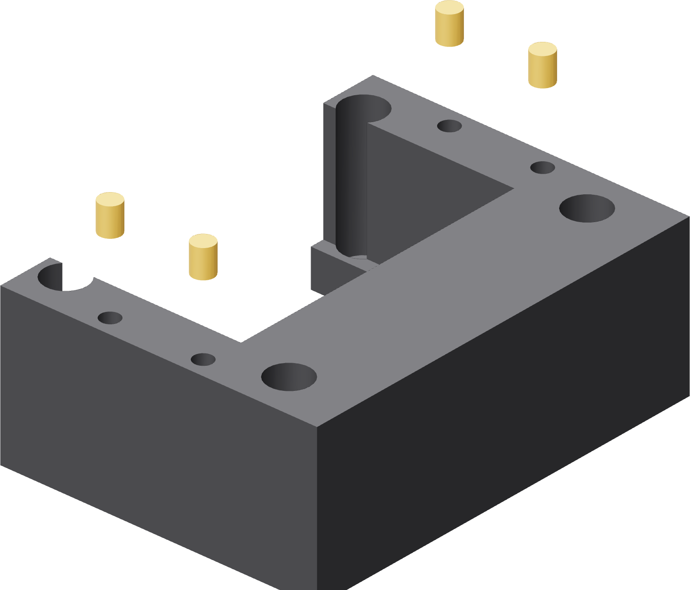
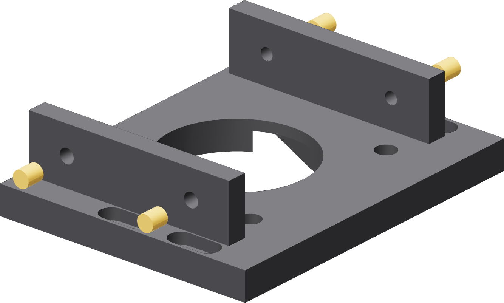
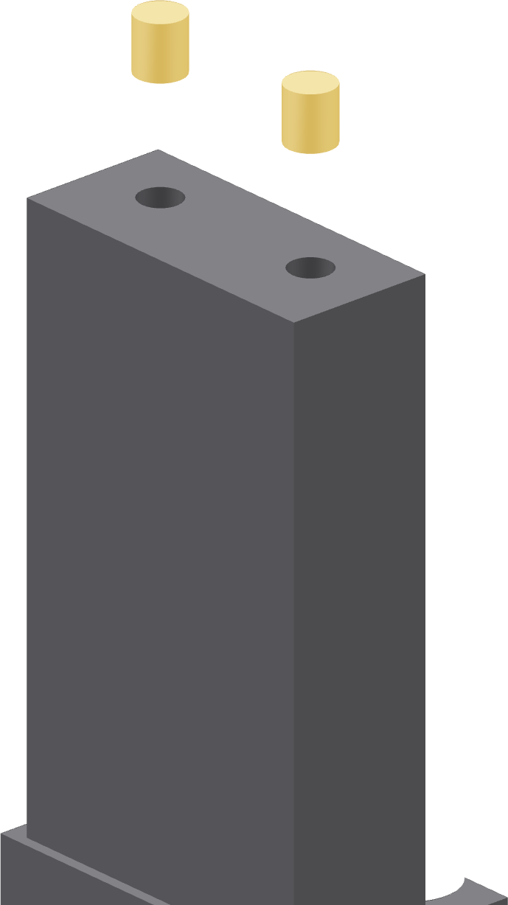

The rest
Nest, motor tower, motor carriage, ground tower, and the four feet. Four of these go in sideways, which is the only thing on this page that is not routine.




| Also | Count | Where |
|---|---|---|
| Ground arm | 1 | Inward, through the clamp jaw's outside face. This is the one that grips the copper. Sideways. |
| Base feet | 8 | Two down into the top of each foot, 5.2 mm deep. |
A sideways insert wants a rest
Lay the part on the bench so the bore points up and press vertically. Trying to drive one horizontally with the part standing is how a knurl ends up crooked, and a crooked insert in the nest collar puts an adjuster screw off the tube's radius.